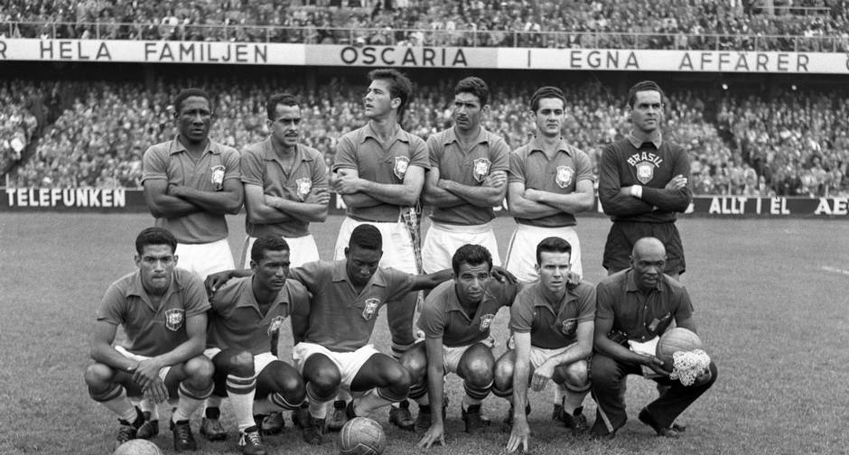

Os titulos mais importantes da Seleção mais vitoriosa do mundo.
Durante 1958 e 1970 o Brasil viveu uma de suas melhores fases: foram três títulos em quatro Copas, com um time de estrelas que praticamente correspondia aos times do Botafogo e do Santos. Os principais craques eram Pelé, Vavá e Garrincha.
Em 1994, o Brasil não era tido como favorito. Um ano antes, nas eliminatórias, havia se classificado no sufoco, graças à ajuda de Romário, que foi até apelidado de São Romário. Já na Copa disputada nos Estados Unidos, o time de Carlos Alberto Parreira era considerado defensivo demais, o que contrariava o estilo do futebol brasileiro. No decorrer da competição, entretanto, o Brasil foi ultrapassando barreiras e se classificando para as fases seguintes.
Atualizados 3 minutos atrás
Na Copa do Mundo FIFA de 1962, o Brasil conseguiu seu segundo título com Garrincha e Vavá como as grandes estrelas. Garrincha fez gols de cabeça e também de perna esquerda e ainda jogou com febre a final, especialmente após Pelé ter se machucado no segundo jogo e estar impossibilitado de jogar pelo resto da Copa do Mundo.
Atualizados 3 minutos atrás
Na Copa do Mundo de 2002, Ronaldo foi novamente convocado, apesar das dúvidas se realmente tinha condições de jogar, pois estava parado há praticamente dois anos, por problemas de contusão. Porém, na Copa, teve grandes atuações. O Brasil, que eliminou as seleções da Bélgica, Inglaterra, Turquia e Alemanha, esta última na final, acabou tendo Ronaldo como o artilheiro, com oito gols, sendo assim um dos grandes nomes da conquista juntamente com Rivaldo, tendo assim conquistado o quinto título para a Seleção Brasileira, vencendo todas as partidas do mundial de 2002 e mantendo sua hegemonia.
Atualizados 3 minutos atrás

Após o fracasso na Copa do Mundo FIFA de 1966, a Seleção brasileira voltou a participar de eliminatórias para o torneio de 1970. Disputou uma das três vagas do continente sul-americano contra as Seleções da Colômbia, Venezuela e Paraguai que completavam o grupo B da América do Sul. A participação do Brasil foi irretocável, sob o comando do treinador João Saldanha, venceu todos os adversários em ambas as partidas (jogos de ida e volta), marcando 23 gols e sofrendo apenas dois.
Atualizados 3 minutos atrás
Após 64 anos de espera, em 20 de agosto de 2016, diante de um Maracanã lotado, que a Seleção Brasileira conquistou pela primeira vez a medalha de ouro no futebol dos Jogos Olímpicos. O triunfo na Rio 2016 veio após um empate por 1 a 1 com a Alemanha no tempo regulamentar. Na disputa por pênaltis, o título veio na quinta bola chutada por Neymar, após o goleiro Weverton ter defendido o penalti cobrado pelo jogador alemão.
O artilheiro do Brasil nos Jogos Olímpicos de 2016 foi Neymar, com quatro gols. Ele marcou em todas as partidas do mata-mata e foi dele o gol que colocou a Seleção na dianteira do placar na final. Também balançaram as redes ao longo da campanha Gabriel Barbosa, Gabriel Jesus, Luan e Marquinhos.
Atualizados 3 minutos atrás
A grande habilidade com os pés pode ser devido à miscigenação e ao ritmo associados à capoeira e ao samba, caracterizados pelos movimentos dos pés para dançar ou para brincar com o ritmo dos tambores africanos. Acredita-se que este estilo tenha sido desenvolvido em bairros pobres habitados por pessoas de ascendência africana.
A chamada "escola brasileira de futebol" é conhecida pela criatividade, fluidez e estilo ofensivo de jogo. Por exemplo, driblar é uma parte essencial do seu estilo. A seleção brasileira é temida pelo mundo todo, por ter seu jogo extremamente ofensivo, habilidoso e alegre.
Ao lado temos 100 gols incriveis de jogadores que passaram pela seleção brasileira e utilizaram da "alegria nos pés" para marcar gols Inesquecíveis.